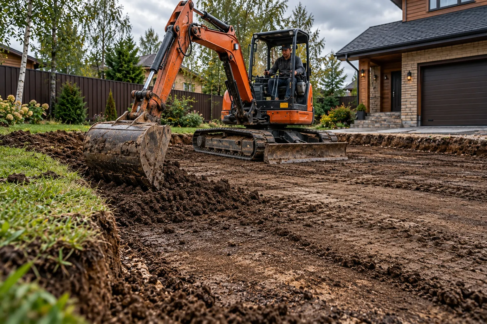
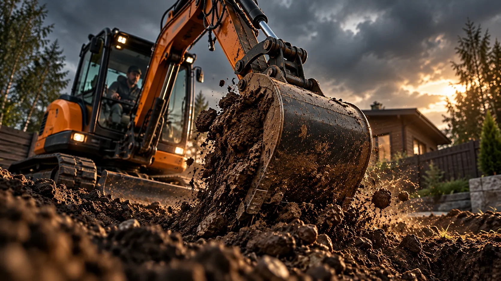

ПРОЕЗД
Ширина ворот, проходы, повороты, мостики, покрытия.
Характеристики, оснащение и возможность проезда зависят от конкретной машины. Без фиктивного каталога и обещаний.


Здесь будут указаны подтверждённые модель, масса, ширина по гусеницам, глубина копания, типы ковшей и условия доставки.
Не указываем габариты и производительность без фактических данных.
Ширина ворот, проходы, повороты, мостики, покрытия.
Тип грунта, уклон, подземные коммуникации, близость фундаментов.
Размеры выемки, место отвала грунта, примерный график.
Место, примерные размеры и несколько фотографий участка помогут понять объём работ и условия подъезда. Стоимость обсуждаем после уточнения деталей.